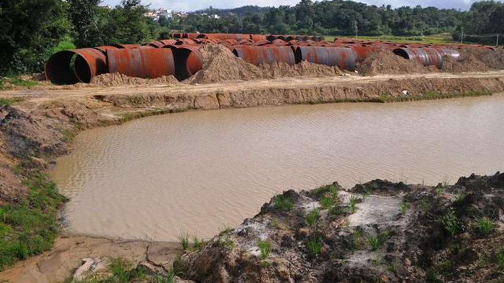
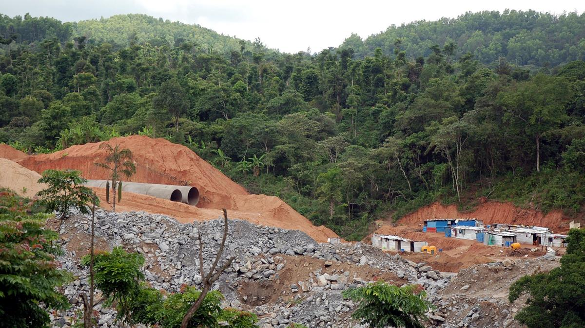

MANGALURU: In a highly alarming development, insider sources have revealed that the state government is quietly working on a new strategy to expand the controversial Yettinahole project by planning to divert additional water from the Kumaradhara River.
This hidden move comes even as coastal communities and environmentalists continue to fight the catastrophic ecological damage already caused to the Netravati River basin and the eco-sensitive Western Ghats.
The Hidden Trap: Why a Letter Campaign Right Now is a Bureaucratic Dead End
While local anger is at an all-time high, campaign strategists are issuing a crucial, tactical warning to the public: Do not send your protest letters or portal grievances to the President of India just yet.
Inside information indicates that if citizens flood the Rashtrapati Bhavan portal right now, the government will quickly dismiss the petitions using a classic bureaucratic shield. They will argue that over ₹23,000 crores have already been spent and that the project is "12 years too late to halt."

The Blueprint: This is Only Stage 1 of a Multi-Phase Siphon
What the public sees right now is merely Stage 1. High-level technical documents reviewed by the Tuluva Guardian clarify that the ultimate, unpublicized milestone of this scheme is to extract a staggering **24 TMC (Thousand Million Cubic Feet)** of water from our coastal ecosystem.
Engineering reality dictates that the immediate run-off catchments from Yettinahole and its neighboring streams cannot reliably fulfill this metric during low-flow periods. To close this multi-billion rupee deficit, planners have quietly structuralized a roadmap that spans **multiple incremental development stages** designed to expand outward until almost every critical sub-river on the coastal grid is compromised.
| Project Phase | Target Sub-River Systems | Projected Capture (TMC) | Status |
|---|---|---|---|
| Stage 1 | Yettinahole Upper Streams, Kadumane Hole | ~5.5 to 9.0 TMC | Operational Infrastructure / Testing |
| Stage 2 (Proposed Expansion) | Kumaradhara River Systems & Tributaries | +6.5 TMC | DPR Structural Design Phase |
| Stage 3 & Beyond | Gundia River Offshoots & Local Sub-basins | Bumping up to the 24 TMC Target | Long-term Corridor Blueprinting |
| Stage 3 & Beyond | Gundia River Offshoots & Local Sub-basins | Analytical Estimation: Reaching the 24 TMC Target | Long-term Corridor Blueprinting |
To ensure a rigorous legal defense, regional stakeholders emphasize a highly calculated approach to public advocacy. Environmental analysts advise communities to carefully time their institutional filings, noting that the most effective window for legal scrutiny occurs immediately upon the official public release of any updated Detailed Project Report (DPR) or expansion notification for the Kumaradhara basin.
A newly published DPR establishes a fresh administrative and legal milestone. Legal experts point out that coordinating a synchronized filing of formal memorandums at that precise juncture creates a solid basis for a fresh review under environmental statutes, preventing the administration from relying solely on past clearances as a defense shield.
Investigative Reports Highlight Coastal Threats
Recent investigative reporting by The Hindu has confirmed that state authorities are blueprinting expansion proposals that focus heavily on tapping into the Kumaradhara River basin—the ecological lifeline of Kukke Subrahmanya and a primary source feeding the coastal plains. Incorporating this substantial layout into the existing project framework raises critical questions regarding downstream water scarcity and the fragile biodiversity of the Western Ghats, potentially bypassing the rigorous independent environmental assessments a new project would normally require.

"The data points to a clear structural layout that needs to be scrutinized closely," a representative from the frontline activist movement told Tuluva Guardian. "We are focusing entirely on verifying the exact scope of these upcoming developmental phases. Our current objective is to ensure complete public awareness regarding the hydrological calculations so that the community is fully prepared to engage through proper statutory channels the moment the official documents are filed."
The Legal Framework: Recommended Civil Action
In light of these updates, frontline environmental advocates have issued a specific strategic framework for citizens and regional organizations looking to register their environmental concerns effectively through legal channels:
- Avoid Standard Email Portals: Campaign organizers suggest holding off on generic electronic petitions or email floods to the President's office, as administrative portals frequently process mass digital mail with standard boilerplate replies.
- Prioritize Physical Registered Mail: The recommended strategy focuses on drafting and sending signed, physical letters via registered post directly to the principal benches of the National Green Tribunal (NGT) and the Ministry of Environment, Forest and Climate Change (MoEFCC).
- Establish an Administrative Trail: Legal advocates point out that physical, registered mail creates an undeniable statutory paper trail that forces a formal entry into the environmental registry, ensuring the tribunal keeps a firm look-over on any upcoming project modifications.
The Tuluva Guardian will continue to monitor the project's technical developments and provide updates as further official documentation becomes available.